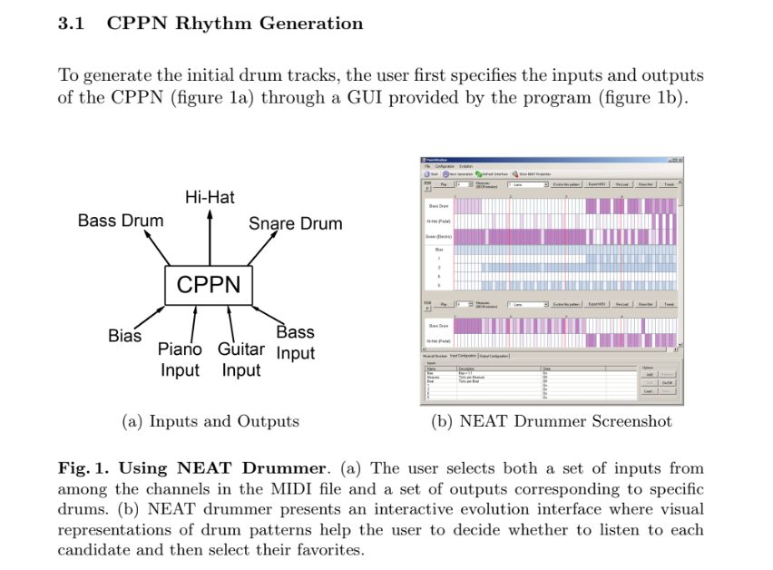
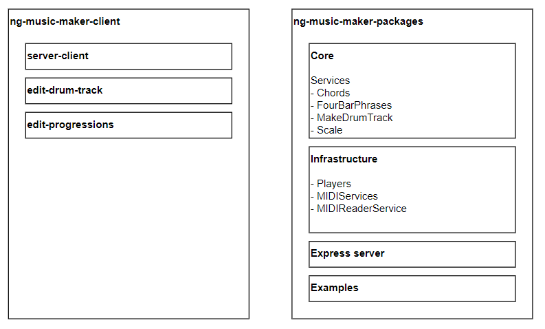

Dropping a BEAT with Angular and TypeScript
Michael Rosario
InnovativeTeams.NET
Twitter: @MichaelRosario
Agenda
- Motivation
- Tour of Sonic Pi
- Tour of Ng-Music-Maker
- Google Magenta Project
- Hands-on workshop
## Motivations
- Blending music education and coding
- Explore experiments with music oriented UX
- Creating tools to inspire music makers
NEAT Drummer @ Eplex of UCF

Major Chord
- {x} Major Chord = {x} + 4 steps + 3 steps
- {x} is known root note
- Happy feelings
Minor Chord
- {x} Minor Chord = Root + 3 steps + 4 steps
- {x} is known root note
- Feelings of tension
Scales
- Major
- Minor
- Pentatonic
- Blues
Rythm
- Repetition = good!
- Space and silence matters
## Tour of Sonic Pi
- Created by Sam Aaron
- Engaging tool for teaching music theory and code to makers young and old.
- Great EDM vibe! Features live coding
## Tour of Sonic Pi
``` ruby
in_thread do
loop do
play_chord chord(:a, :minor)
sleep 2
play_chord chord(:g)
sleep 2
# more play_chords and sleeps ...
end
end
```
## Tour of Sonic Pi
``` ruby
in_thread do
loop do
sample :drum_bass_hard
sleep 1
sample :drum_snare_hard
sleep 1
end
end
```
## Tour of Sonic Pi
``` ruby
in_thread do
loop do
sample :drum_tom_hi_soft
sleep 0.5
sample :drum_cymbal_closed
sleep 0.5
end
end
```
## Tour of Sonic Pi
``` ruby
loop do
play choose(scale(:a, :minor_pentatonic, num_octaves: 1))
sleep choose([1,0.25])
end
```
Tour of NG-Music-Maker

TypeScript is used on client and server
MIDI
- File format representing music data
- Unlike raw audio format, notes events are represented with time stamps and length
- Format can contain many tracks/instruments
## Tour of NG-Music-Maker
- drum patterns
- scales
- progressions
- random song maker
## NG-Music-Maker(Angular)
- Drum machine
- Blockly song maker
Magenta Project
- TensorFlow and neural networks(NN)
- magenta.tensorflow.org
- LSTM / recurrent neural networks
- Uses evolution and elaboration properties of NN